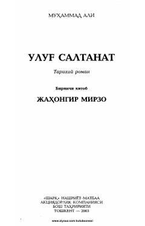

USTemurbek davri va Jahongir Mirzo hayotiga bag'ishlangan tarixiy roman.
Ushbu tarixiy romanda Temurbek davri va uning saltanati voqealari, xususan Jahongir Mirzo hayoti bilan bog'liq qiziqarli tarixiy jarayonlar tasvirlangan. Asar o'quvchini o'tmish sahifalari bo'ylab sayohat qildirib, Movarounnahrdagi ijtimoiy-siyosiy muhitni ochib beradi.